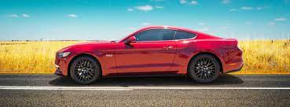

- carros
- 
- Los 16 deportivos más asequibles del momento
- Los 21 coches más rápidos del mundo y su velocidad máxima
- Los 23 coches más caros y lujosos del mundo que desearás
- Los 16 deportivos más asequibles del momento
- Los 21 coches más rápidos del mundo y su velocidad máxima
- Los 23 coches más caros y lujosos del mundo que desearás
Si eres como nosotros, y si estás leyendo esto probablemente lo seas, seguro que valoras la velocidad y la deportividad por encima de todas las cosas cuando piensas en un coche para conducir. Los coches deportivos son el elemento vital de los entusiastas de los automóviles y, por suerte para nosotros, hay muchas buenas opciones en una amplia gama de precios.
Como verás hay opciones para todos los gustos y bolsillos: desde coches de tracción trasera asequibles y divertidos hasta avanzados superdeportivos o juguetes dignos de un buen track day, sino olvidarnos tampoco de algún que otro muscle car. En cualquiera de los casos todos comparten esa capacidad para divertirnos y emocionarnos al volante y ofrecer un nivel de ingeniería y rendimiento que los coloca entre lo mejor de lo mejor dentro del mundo de los deportivos.
De hecho muchos de ellos ni siquiera necesitan estar entre los coches más rápidos del mundo para ser buenos deportivos. Al fin y al cabo esa capacidad de emocionar muchas veces no entiende de cifras y sí más de un chasis bien afinado, un buen cambio manual para ser más partícipes de la conducción o un buen motriz de tracción trasera capaz de ofrecerte una trasera lo suficientemente juguetona como para divertirte al tomar cada curva. Seguro que no acelerarás tan rápido ni saldrás tan ágil de la curva como con coche con tracción total, pero seguro que te lo pasarás mucho mejor.
Con esta premisa convertida en nuestro mantra hemos elaborado una lista con los mejores coches deportivos que hemos conocido durante estos últimos meses. Todos los coches de esta lista están garantizados en lo que se refiere a llamar la atención y emocionar a los conductores. ¿Como lo sabemos? Nuestros compañeros tanto de España como de EEUU han probado de primera mano estos deportivos que aún hoy se pueden comprar. Muchos de ellos en nuestras recientes pruebas de coches y otros incluso con exhaustivos test de rendimiento e incluso mediciones del capacidad de carga y de consumo en condiciones reales. Así pues, vamos a conocer a los mejores deportivos según Car and Driver.

Si eres como nosotros, y si estás leyendo esto probablemente lo seas, seguro que valoras la velocidad y la deportividad por encima de todas las cosas cuando piensas en un coche para conducir. Los coches deportivos son el elemento vital de los entusiastas de los automóviles y, por suerte para nosotros, hay muchas buenas opciones en una amplia gama de precios.
Como verás hay opciones para todos los gustos y bolsillos: desde coches de tracción trasera asequibles y divertidos hasta avanzados superdeportivos o juguetes dignos de un buen track day, sino olvidarnos tampoco de algún que otro muscle car. En cualquiera de los casos todos comparten esa capacidad para divertirnos y emocionarnos al volante y ofrecer un nivel de ingeniería y rendimiento que los coloca entre lo mejor de lo mejor dentro del mundo de los deportivos.
De hecho muchos de ellos ni siquiera necesitan estar entre los coches más rápidos del mundo para ser buenos deportivos. Al fin y al cabo esa capacidad de emocionar muchas veces no entiende de cifras y sí más de un chasis bien afinado, un buen cambio manual para ser más partícipes de la conducción o un buen motriz de tracción trasera capaz de ofrecerte una trasera lo suficientemente juguetona como para divertirte al tomar cada curva. Seguro que no acelerarás tan rápido ni saldrás tan ágil de la curva como con coche con tracción total, pero seguro que te lo pasarás mucho mejor.
Con esta premisa convertida en nuestro mantra hemos elaborado una lista con los mejores coches deportivos que hemos conocido durante estos últimos meses. Todos los coches de esta lista están garantizados en lo que se refiere a llamar la atención y emocionar a los conductores. ¿Como lo sabemos? Nuestros compañeros tanto de España como de EEUU han probado de primera mano estos deportivos que aún hoy se pueden comprar. Muchos de ellos en nuestras recientes pruebas de coches y otros incluso con exhaustivos test de rendimiento e incluso mediciones del capacidad de carga y de consumo en condiciones reales. Así pues, vamos a conocer a los mejores deportivos según Car and Driver.